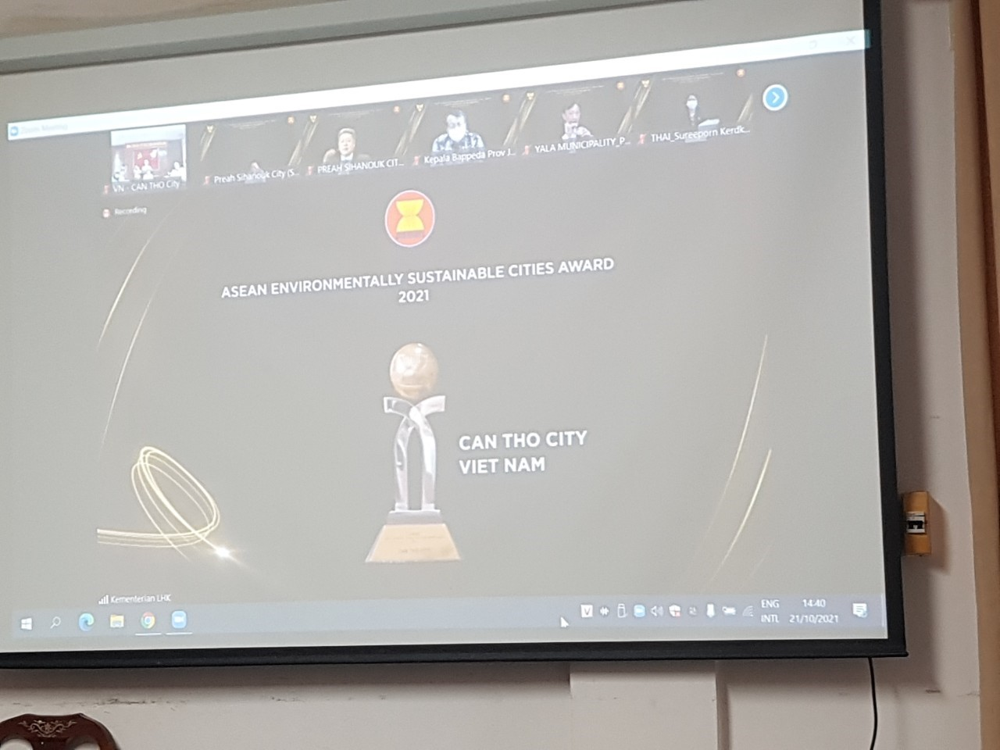

Ngày 21/10/2021, Lễ trao Giải thưởng thành phố ASEAN bền vững môi trường lần thứ 5 (ESC AWARD) và Chứng nhận thành phố ASEAN tiềm năng bền vững môi trường lần thứ 4 được tổ chức trực tuyến tại thủ đô Jakarta, Indonesia. TP. Cần Thơ vinh dự nhận Giải thưởng thành phố ASEAN bền vững môi trường lần 5 từ Bộ trưởng Bộ Môi trường và Lâm nghiệp Indonesia.
Giải thưởng thành phố ASEAN bền vững môi trường lần 5 (ESC AWARD) và Chứng nhận thành phố ASEAN bền vững môi trường lần 4 là một trong những chương trình hợp tác của ASEAN dưới sự điều phối của Nhóm công tác ASEAN về các thành phố bền vững về môi trường (AWGESC). Chương trình này nhằm khuyến khích sự phát triển bền vững của các thành phố trong ASEAN bằng cách ghi nhận và đánh giá cao các thành phố đã thực hiện nhiều sáng kiến và nỗ lực khác nhau để xây dựng các thành phố xanh và sạch. Giải thưởng ASEAN ESC được tổ chức lần đầu tiên vào ngày 8 tháng 10 năm 2008 và sau đó tiến hành 3 năm một lần.
Giải thưởng ASEAN ESC lần thứ 5 và Chứng nhận bền vững lần thứ 4 trở thành một trong chuỗi các sự kiện tại cuộc họp Hội nghị Bộ trưởng Môi trường ASEAN (AMME) lần thứ 16, Indonesia đăng cai tổ chức. Theo đó, thành phố Cần Thơ vinh dự nhận Giải thưởng thành phố ASEAN bền vững môi trường năm 2021; thành phố Ninh Bình, tỉnh Ninh Bình nhận Chứng nhận thành phố ASEAN tiềm năng bền vững môi trường ở hạng mục Đất sạch.
Trước diễn biến phức tạp của dịch bệnh Covid-19, Lễ trao giải ASEAN ESC lần thứ 5 và Chứng nhận lần thứ 4 được tổ chức bằng hình thức trực tuyến như một sự kiện kết hợp. Đại sứ Việt Nam tại thủ đô Jakarta, Indonesia nhận Giải thưởng từ Bộ trưởng Bộ Môi trường và Lâm nghiệp Indonesia, thay mặt cho thành phố Cần Thơ và thành phố Ninh Bình, những thành phố của Việt Nam được trao giải.
TP.Cần Thơ được Giải thưởng thành phố ASEAN bền vững môi trường năm 2021, trước đó năm 2017 thành phố Cần Thơ được nhận Chứng nhận ASEAN thành phố tiềm năng để trở thành thành phố bền vững về môi trường lần thứ 3 về đô thị lớn có không khí sạch. Đây là niềm vinh dự, tự hào lớn ghi nhận quá trình phấn đấu, nỗ lực của Đảng bộ, chính quyền và nhân dân thành phố để thành phố Cần Thơ đạt được các tiêu chí về các chỉ số quy định của thành phố bền vững về môi trường ASEAN.
Phó Chủ tịch UBND thành phố Nguyễn Thực Hiện tham dự trực tuyến Lễ trao giải ASEAN ESC lần thứ 5 và Chứng nhận lần thứ 4 tại điểm cầu TP. Cần Thơ
Để đạt được Giải thưởng thành phố ASEAN bền vững môi trường, được sự chỉ đạo của Bộ Tài nguyên và Môi trường, Ủy ban nhân dân thành phố Cần Thơ, ngay từ đầu năm, Sở Tài nguyên và Môi trường đã nỗ lực chuẩn bị hồ sơ và phối hợp với Tổng cục Môi trường, Bộ Tài nguyên và Môi trường; Vụ Hợp tác quốc tế và Khoa học, Công nghệ thuộc Tổng cục Môi trường tiến hành các thủ tục để đề cử với Ban Thư ký ASEAN, đưa ra Hội đồng xét duyệt tại Hội nghị Nhóm công tác ASEAN về thành phố bền vững môi trường để trình lên Hội nghị Quan chức cao cấp ASEAN về môi trường, Hội nghị Bộ trưởng Môi trường ASEAN phê chuẩn.